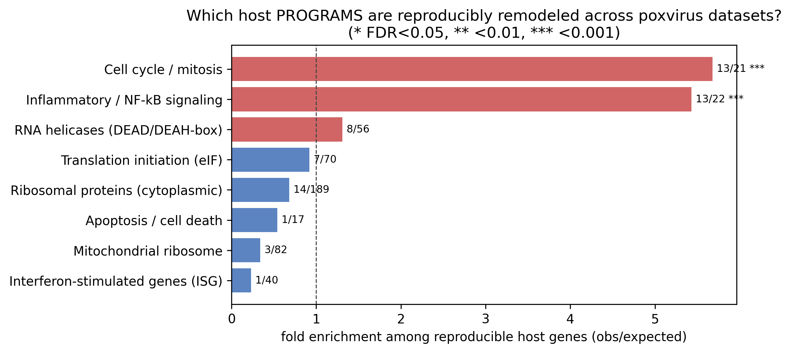
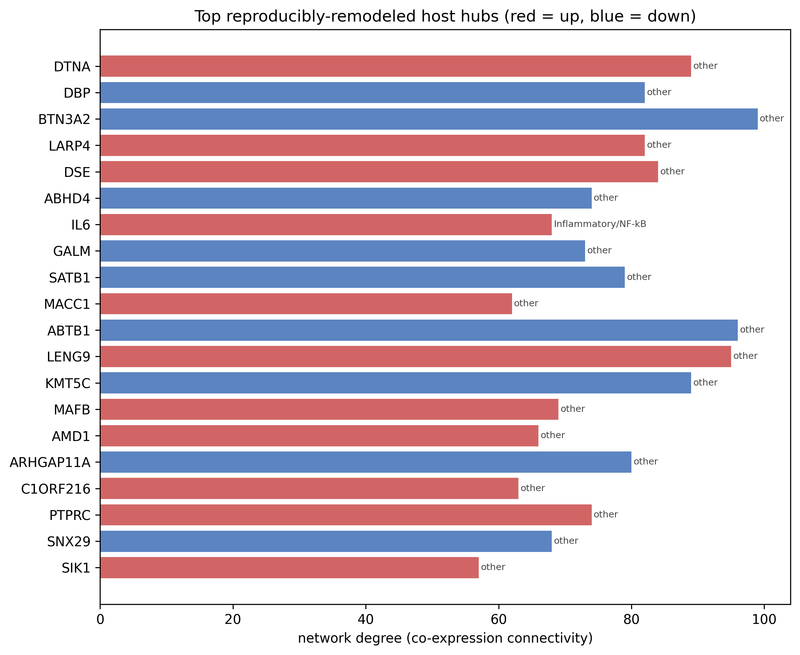
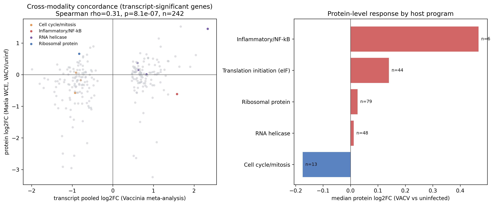

DHX15 meta-FDR < 0.05
- Pooled log2FC
- +0.75
- meta-FDR
- 3.6×10−19
- I²
- 45%
Up in 4 of 4 datasets; rank 96 of 16,841 by meta-FDR (top 0.6%).
Poxviruses take over the cells they infect. Many labs have measured how cells respond, but each used different viruses, cells and methods. I re-analyzed four public datasets with one shared, open pipeline and kept only the host genes that changed the same way across datasets: 1,834 genes.
PoxHostAtlas is a set of public poxvirus RNA-sequencing datasets that I re-analyzed with one common, reproducible workflow. The question is genome-wide: which host genes and pathways change the same way across independent poxvirus datasets, and not just in one experiment? The result is a ranked list of 1,834 host genes and the programs they belong to, with all the code released so anyone can check it.
Poxviruses are a family of viruses that includes the causes of smallpox and mpox. Vaccinia virus is its best-studied member. When a poxvirus infects a cell, it broadly turns down the cell's own gene activity and protein-making while the virus's own messages keep being translated. This takeover is called host shutoff. RNA sequencing (RNA-seq) measures how active each of a cell's genes is, so comparing infected and uninfected cells shows which host genes the infection turns up or down.
Every experiment carries the quirks of its lab: the cell line, the timing, the sequencing run. A change that appears in only one dataset could be one of those quirks, known as a batch effect. If a gene changes the same way in datasets from different studies, it is less likely to be a batch effect and more likely to be real biology. So instead of highlighting what changed in any single experiment, I focused on what changed consistently across several.
A gene made the list only if it passed all four rules:
My role. I conceived and designed the study, identified and curated the datasets, wrote the analysis code, performed all analyses, produced the figures and tables, and wrote the manuscript. My mentor, Deon Nguyen (Arizona State University), supervised the project, advised on analytical direction and interpretation, and reviewed and edited the manuscript. This was a mentored project of the OpenBio Student Research Institute (June 8 – July 31, 2026).
Gene changes in this project are reported as log2 fold changes: +1 means twice as active as in control cells, −1 means half as active, 0 means no change. Move the slider or pick a gene from the atlas.
Conversion only: linear fold change = 2log2 fold change.
Inflammatory and NF-κB signaling genes (such as IL6, IL1B, CXCL8 and BIRC3) were over-represented 5.4-fold (13 of 22), and all 13 went up. Cell-cycle and mitosis genes were over-represented 5.7-fold (13 of 21), and all 13 went down. Ribosomal-protein genes drifted downward without being over-represented, consistent with host shutoff.
Pooling only the two vaccinia datasets, ribosomal-protein (median −0.79) and cell-cycle (−0.58) genes stayed down and translation-initiation genes leaned down (−0.32), while inflammatory induction was much weaker (+0.74, vs +2.0 across all four datasets). The strong inflammatory signal is driven partly by the Myxoma M003 effector datasets.
A hub score combining connectivity and reproducibility ranked DTNA, DBP and BTN3A2 highest; 11 of the top 12 hubs lie outside the curated programs, and IL6 ranked 7th of 228.
A classifier built on 509 helicase and translation genes reached a balanced accuracy of 0.79 averaged over three held-out datasets but only 0.58 on the held-out vaccinia dataset, and housekeeping (0.82) and random gene sets (0.74) did about as well. This points to broad host remodeling rather than a specific signature.
In separate single-cell data, the share of reads from host genes fell from 0.998 to 0.758 in HeLa cells and from 0.999 to 0.804 in BJ5ta fibroblasts. A HeLa proteome agreed modestly with the transcript changes (Spearman ρ = 0.31 for 242 genes), but ribosomal and translation-initiation protein levels were not reduced.
Seven interactive views of the results. Hover over or tap any bar or dot for exact values, open the data table under each chart, and use the buttons to switch views. Each view has its own link you can share.
"Up" means a gene was more active in infected (or M003-expressing) cells than in control cells; "down" means less active.
Slightly more reproducible genes went down (963) than up (871).
Of 16,841 genes measured in at least 3 datasets, 3,337 were significant after pooling and 1,834 also passed the direction and size rules.
I tested 10 host "programs" (groups of genes with a shared job) for over-representation: does a program hold more reproducible genes than chance would put there? A fold enrichment of 1 means "as expected by chance".
Cell-cycle (5.68-fold) and inflammatory/NF-κB (5.43-fold) programs stand out; no other program is significant.
Inflammatory genes rise most across all four datasets (+2.00) but much less in the two vaccinia infections (+0.74), where ribosomal-protein (−0.79) and cell-cycle (−0.58) genes stay down.
The shutoff signature builds over infection: ribosomal-protein genes go from +0.03 at 2 h to −0.74 at 24 h, and cell-cycle genes reach −1.61.
To rank genes without favoring any gene family, I took the 250 most significant named reproducible genes (228 of them were measured in a 45-sample expression matrix) and linked two genes whenever their activity was strongly correlated across those samples, in the same or the opposite direction (|r| ≥ 0.7). A gene's hub score averages two percentile ranks: how connected it is and how reproducible its change is.
DTNA, DBP and BTN3A2 rank highest; IL6, 7th, is the only top-12 hub from a curated program.
Click or tap a gene to open its card below.
Ranks 1–12 are from the manuscript's Table 2; ranks 13–20 from the project repository.
Hub rank 1 of 228 · up-regulated · outside the curated programs · pooled log2 fold change +1.64 · meta-FDR 8.4×10−75 · 89 co-expression partners · hub score 0.956
How to read this. Network links mean two genes' activity was correlated across samples, not that their proteins touch or regulate each other. The network has 228 genes and 4,430 links, with a co-up-regulated module of 128 genes and a co-down-regulated module of 93. The hubs are candidates for lab follow-up, not proven regulators.
A stress test of portability: if a model learns to tell infected (or M003-expressing) samples from controls in some datasets, can it do the same in a dataset it has never seen? I held out one whole dataset at a time (45 samples from the three datasets with sample-level counts) and compared the gene set against control gene sets.
The model transferred between the two Myxoma datasets (1.00 and 0.80) but scored 0.58 on the held-out vaccinia dataset, close to chance.
Housekeeping genes (0.82) and random gene sets (0.74) did about as well as the 509 translation genes (0.79); shuffled labels fell to chance (0.54).
What this means. Infection status transferred between the two Myxoma datasets but not to the held-out vaccinia dataset, and it did not depend on this particular gene set. That is what a broad host program would look like, so I report it as broad host remodeling rather than a specific signature, not as a predictive test.
RNA helicases unwind RNA. Earlier studies reported that host RNA helicases such as DHX29 affect which cells myxoma virus can infect, and that DHX29 works with eIF3 to help ribosomes scan structured messages. So I treated helicases as one pre-defined sub-question within the genome-wide analysis, not the headline. Switch the pooling to see how the evidence for DHX15 and DHX29 changes.
Which helicase looks stronger depends on which datasets are pooled.
Up in 4 of 4 datasets; rank 96 of 16,841 by meta-FDR (top 0.6%).
Up in 4 of 4 datasets, but the size of the change varies widely.
Across all four datasets, DHX15 has the strongest pooled helicase support; DHX29 is up everywhere but too heterogeneous to pass correction.
DHX15's I² values, its vaccinia-only fold change and its exact rank (96), and DHX29's all-dataset fold change, come from the project's repository tables; all other values are quoted in the manuscript (Abstract, p.10).
Both genes went up in all four datasets; DHX29's change ranged from +0.15 to +0.98 across datasets, matching its high heterogeneity (I² 80%).
An independent check, using single-cell RNA-seq data that were not part of the atlas (Matía et al. 2024, a bioRxiv preprint): if host shutoff is real, infected cells should show a smaller share of reads from host genes, and fewer genes should be detected per cell.
The host share fell from 0.998 to 0.758 in HeLa cells and from 0.999 to 0.804 in BJ5ta fibroblasts.
RNA is not protein. I compared the vaccinia-only transcript changes with an independent HeLa proteome from the same preprint (3 infected vs 3 uninfected whole-cell samples) to see whether protein levels moved the same way.
Agreement is positive but modest: ρ = 0.31 for the 242 transcript-significant genes, and only 0.08 across all 7,111 matched genes.
Cell-cycle proteins were modestly lower (−0.17), but ribosomal-protein (+0.03) and translation-initiation (+0.14) levels were not reduced.
I searched NCBI GEO and PubMed, screened 12 candidate datasets and sorted them into tiers by data availability and comparability. The four Tier-A datasets come from three independent sources and two host species; GSE287860 and GSE288000 are two sub-series of one Myxoma study. Seven Tier-C datasets (for example, long-read viral transcriptome studies) were catalogued as context but not analyzed. All data are public and were generated by other research groups.
| Dataset & source study | Tier | Virus / system | Host & cells | Samples | Role in the atlas |
|---|---|---|---|---|---|
| GSE278320Park et al. 2025, Nat Microbiol | A | Vaccinia virus (strain WR) infection | Human · HAP1 cells | 38 in GEO; 9 analyzed (3 mock, 6 infected) | Meta-analysis, network, classifier |
| GSE284044Kwon et al. 2026, Virol J | A | Vaccinia virus infection, time course (2, 6, 24 h) | African green monkey · Vero kidney cell line | 24 in GEO; authors' DESeq2 tables (13,028 of 18,785 Vero genes matched a gene in another dataset) | Meta-analysis (6 h), time course |
| GSE287860Remick et al. 2026, Science | A | Myxoma virus M003 effector vs mCherry control (protein expression, no infection) | Human cells | 6 in GEO; 6 analyzed (3 vs 3) | Meta-analysis, network, classifier |
| GSE288000Remick et al. 2026, Science | A | Myxoma M003 vs mCherry in five host backgrounds (non-targeting control and four knockouts); companion sub-series of GSE287860 | Human cells (5 backgrounds) | 30 in GEO; 30 analyzed (non-targeting control, 3 vs 3, in the meta-analysis) | Meta-analysis, host-background robustness, network, classifier |
| GSE185520Ly et al. 2022, PLoS Pathog | B | Vaccinia infection (wild type and D9/D10 decapping mutant) | Human cells | 30 in GEO; authors' FPKM / log2FC tables (3 contrasts) | Directional comparison only (not pooled) |
| Matía et al. 2024bioRxiv preprint (supplementary tables, not GEO) | Ext. | Vaccinia virus infection | Human · HeLa and BJ5ta fibroblasts (single-cell); HeLa (proteomics) | 4,346 HeLa and 11,628 BJ5ta cells; 3 vs 3 HeLa proteomes | Independent cross-modality validation |
Source: manuscript Table 1 (p.4), pp.3–4 and 6; host species, cell types and knockout backgrounds from the repository's dataset registry.
Ten steps, from finding the data to a public release that anyone can re-run with one command.
Searched NCBI GEO (4 queries) and PubMed (3 queries), up to 10 records each, plus the literature and expert suggestions. Screened 12 candidates: 4 Tier A, 1 Tier B, 7 Tier C.
Removed genes with fewer than 10 total reads and ran the DESeq2 model (PyDESeq2) on raw counts; used the authors' DESeq2 tables for the Vero time course. Result: 10 harmonized contrasts.
One contrast per dataset; DerSimonian–Laird pooled log2 fold change, I², direction agreement and Benjamini–Hochberg meta-FDR. The reproducibility rule keeps 1,834 of 16,841 genes.
Leave-one-study-out re-pooling (each dataset dropped in turn) and Class I–III heterogeneity classes for 485 translation-family genes; cross-study rank agreement (Spearman, Kendall's W).
One-sided hypergeometric tests for 10 host programs, program direction medians, a vaccinia-only meta-analysis and the 2/6/24-hour time course.
228 genes × 45 samples; genes linked when |r| ≥ 0.7; degree and eigenvector centrality; hub score; greedy-modularity modules. A separate STRING subnetwork is in the supplement.
Leave-one-dataset-out tests of four classifiers, with housekeeping, interferon and random gene-set controls, label permutation, matched null sets, feature removal and a batch check.
Compared the author-processed fold changes of GSE185520 (3 contrasts) with the pooled results by direction and Spearman correlation.
Matía et al. 2024 single-cell data (HeLa, BJ5ta; Mann–Whitney U tests) and a HeLa proteome (Spearman correlation and sign agreement).
Scripts, tables and figures on GitHub with a one-command rerun (run_all.sh), a clean-clone check (verify_clone.sh), pinned requirements and a SHA-256 file-hash manifest.
Original figures from the analysis. Click or tap any figure to zoom and pan.



PoxHostAtlas is computational and hypothesis-generating. It re-analyzes data that other groups generated and released, makes no cause-and-effect claims and does not claim primary discovery. Its rankings are leads for lab experiments.
Only the two Myxoma sub-series of one study agree strongly (ρ = 0.87); datasets from different sources agree weakly (ρ from −0.13 to 0.21). Overall Kendall's W = 0.40.
Most fall in the broader Class II (254 genes: consistent in direction, but not meeting every strict Class I condition); only 33 meet the strict Class I rule.
I released the whole analysis so that anyone can check it, from data download to the final figures.
run_all.sh) reruns the pipelineverify_clone.sh) re-clones the repository and checks that regenerated numbers match the manuscriptNumbers on this page follow the September 2026 manuscript. Per the repository README, I used Claude Code (Anthropic) as a supplementary tool for code verification and formatting of the project and its figures, with my mentor's approval, as OpenBio SRI directs students to do.
git clone https://github.com/mubarsad012/poxhostatlas.git
cd poxhostatlas
python3 -m venv venv
source venv/bin/activate
pip install -r requirements.txt
bash run_all.sh # full pipeline
bash verify_clone.sh # clean-clone checkSupplementary tables and figures are in the supplementary PDF on GitHub.